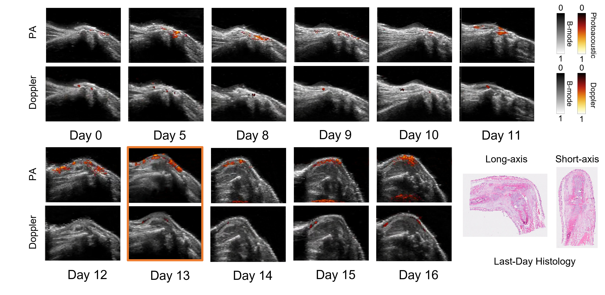
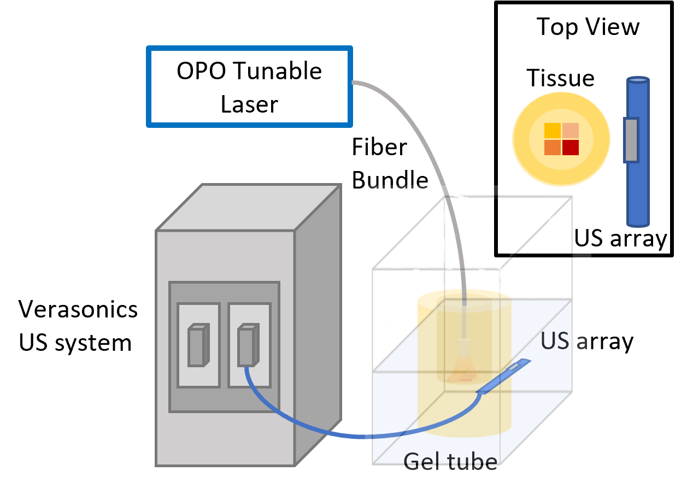
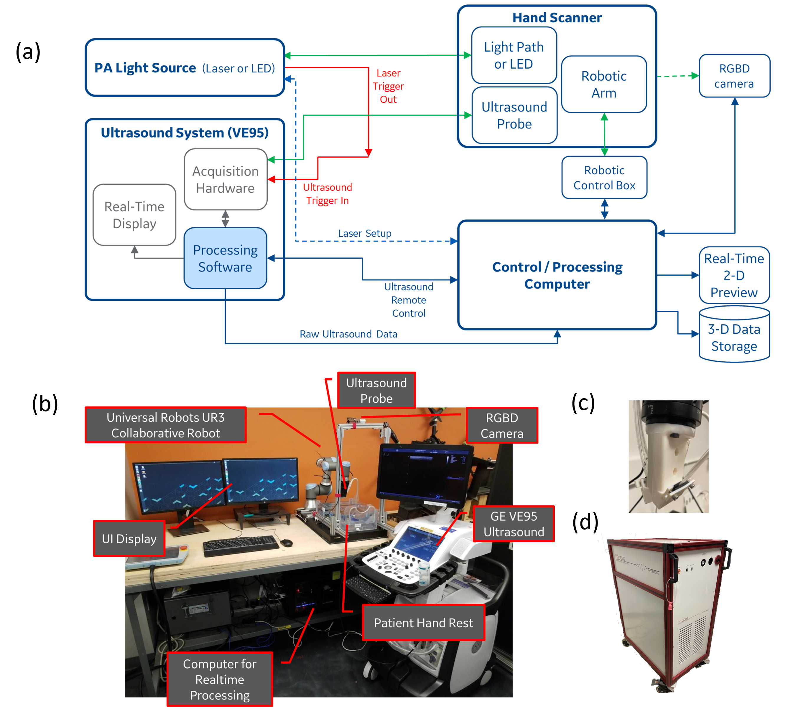

About
Xiaorui Peng received her B.S. degree in Electrical Engineering from Beijing Institute of Technology in 2019 and her master’s degree in Biomedical Engineering from Duke University in 2021. Now, Xiaorui joined the Optical Imaging Laboratory and is pursuing her Ph.D. degree in Biomedical Engineering at the University of Michigan. Her current research interests focus on potential clinical applications of photoacoutics.
Publications
- Xiaorui Peng, Aaron Dentinger, Shivangi Kewalramani, Zhanpeng Xu, Steven Gray, Soumya Ghose, Yew Teck Tan, Zhaoyuan Yang, Janggun Jo, David Chamberland, Guan Xu, Nada Abdulaziz, Girish Gandikota, David Mills, and Xueding Wang. "An automatic 3D ultrasound and photoacoustic combined imaging system for human inflammatory arthritis." IEEE Transactions on Ultrasonics, Ferroelectrics, and Freqeuncy Control
- Xiaorui Peng, Zhanpeng Xu, Aaron Dentinger, Shivangi Kewalramani, Janggun Jo, Guan Xu, David Chamberland, Nada Abdulaziz, Girish Gandikota, David Mills, and Xueding Wang. "Longitudinal volumetric assessment of inflammatory arthritis via photoacoustic imaging and Doppler ultrasound imaging." Photoacoustics (2023): 100514.
- Taboada, Carlos, Jesse Delia, Maomao Chen, Chenshuo Ma, Xiaorui Peng, Xiaoyi Zhu, Laiming Jiang et al. "Glassfrogs conceal blood in their liver to maintain transparency." Science 378, no. 6626 (2022): 1315-1320.
- Duan, Tingyang, Xiaorui Peng, Maomao Chen, Dong Zhang, Fei Gao, and Junjie Yao. "Detection of weak optical absorption by optical resolution photoacoustic microscopy." Photoacoustics 25 (2022): 100335.
- Zhu, Xiaoyi, Qiang Huang, Anthony DiSpirito, Tri Vu, Qiangzhou Rong, Xiaorui Peng, Huaxin Sheng et al. "Real-time whole-brain imaging of hemodynamics and oxygenation at micro-vessel resolution with ultrafast wide-field photoacoustic microscopy." Light: Science & Applications 11, no. 1 (2022): 1-15.
Contact
Email: xiaoruip@umich.edu
Phone: (919) 599-2280
Photos


